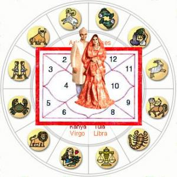

 |
मंगली दोष का ज्योतिषीय आधार (Astrological analysis of Manglik Dosha)
मंगल उष्ण प्रकृति का ग्रह है.इसे पाप ग्रह माना जाता है. विवाह और वैवाहिक जीवन में मंगल का अशुभ प्रभाव सबसे अधिक दिखाई देता है.
मंगल दोष जिसे मंगली के नाम से जाना जाता है इसके कारण कई स्त्री और पुरूष आजीवन अविवाहित ही रह जाते हैं.इस दोष को गहराई से समझना आवश्यक है ताकि इसका भय दूर हो सके.
वैदिक ज्योतिष में मंगल को लग्न, द्वितीय, चतुर्थ, सप्तम, अष्टम और द्वादश भाव में दोष पूर्ण माना जाता है.इन भावो में उपस्थित मंगल वैवाहिक जीवन के लिए अनिष्टकारक कहा गया है.जन्म कुण्डली में इन पांचों भावों में मंगल के साथ जितने क्रूर ग्रह बैठे हों मंगल उतना ही दोषपूर्ण होता है जैसे दो क्रूर होने पर दोगुना, चार हों तो चार चार गुणा.मंगल का पाप प्रभाव अलग अलग तरीके से पांचों भाव में दृष्टिगत होता है जैसे:
- लग्न भाव में मंगल (Mangal in Ascendant )
लग्न भाव से व्यक्ति का शरीर, स्वास्थ्य, व्यक्तित्व का विचार किया जाता है.लग्न भाव में मंगल होने से व्यक्ति उग्र एवं क्रोधी होता है.यह मंगल हठी और आक्रमक भी बनाता है.इस भाव में उपस्थित मंगल की चतुर्थ दृष्टि सुख सुख स्थान पर होने से गृहस्थ सुख में कमी आती है.सप्तम दृष्टि जीवन साथी के स्थान पर होने से पति पत्नी में विरोधाभास एवं दूरी बनी रहती है.अष्टम भाव पर मंगल की पूर्ण दृष्टि जीवनसाथी के लिए संकट कारक होता है.
|
- द्वितीय भाव में मंगल (Mangal in Second Bhava)
भवदीपिका नामक ग्रंथ में द्वितीय भावस्थ मंगल को भी मंगली दोष से पीड़ित बताया गया है.यह भाव कुटुम्ब और धन का स्थान होता है.यह मंगल परिवार और सगे सम्बन्धियों से विरोध पैदा करता है.परिवार में तनाव के कारण पति पत्नी में दूरियां लाता है.इस भाव का मंगल पंचम भाव, अष्टम भाव एवं नवम भाव को देखता है.मंगल की इन भावों में दृष्टि से संतान पक्ष पर विपरीत प्रभाव होता है.भाग्य का फल मंदा होता है.
- चतुर्थ भाव में मंगल (Mangal in Fourth Bhava)
चतुर्थ स्थान में बैठा मंगल सप्तम, दशम एवं एकादश भाव को देखता है.यह मंगल स्थायी सम्पत्ति देता है परंतु गृहस्थ जीवन को कष्टमय बना देता है.मंगल की दृष्टि जीवनसाथी के गृह में होने से वैचारिक मतभेद बना रहता है.मतभेद एवं आपसी प्रेम का अभाव होने के कारण जीवनसाथी के सुख में कमी लाता है.मंगली दोष के कारण पति पत्नी के बीच दूरियां बढ़ जाती है और दोष निवारण नहीं होने पर अलगाव भी हो सकता है.यह मंगल जीवनसाथी को संकट में नहीं डालता है.
- सप्तम भाव में मंगल (Mangal in Seventh Bhava)
सप्तम भाव जीवनसाथी का घर होता है.इस भाव में बैठा मंगल वैवाहिक जीवन के लिए सर्वाधिक दोषपूर्ण माना जाता है.इस भाव में मंगली दोष होने से जीवनसाथी के स्वास्थ्य में उतार चढ़ाव बना रहता है.जीवनसाथी उग्र एवं क्रोधी स्वभाव का होता है.यह मंगल लग्न स्थान, धन स्थान एवं कर्म स्थान पर पूर्ण दृष्टि डालता है.मंगल की दृष्टि के कारण आर्थिक संकट, व्यवसाय एवं रोजगार में हानि एवं दुर्घटना की संभावना बनती है.यह मंगल चारित्रिक दोष उत्पन्न करता है एवं विवाहेत्तर सम्बन्ध भी बनाता है.संतान के संदर्भ में भी यह कष्टकारी होता है.मंगल के अशुभ प्रभाव के कारण पति पत्नी में दूरियां बढ़ती है जिसके कारण रिश्ते बिखरने लगते हैं.जन्मांग में अगर मंगल इस भाव में मंगली दोष से पीड़ित है तो इसका उपचार कर लेना चाहिए.
- अष्टम भाव में मंगल (Mangal in Eigth Bhava)
अष्टम स्थान दुख, कष्ट, संकट एवं आयु का घर होता है.इस भाव में मंगल वैवाहिक जीवन के सुख को निगल लेता है.अष्टमस्थ मंगल मानसिक पीड़ा एवं कष्ट प्रदान करने वाला होता है.जीवनसाथी के सुख में बाधक होता है.धन भाव में इसकी दृष्टि होने से धन की हानि और आर्थिक कष्ट होता है.रोग के कारण दाम्पत्य सुख का अभाव होता है.ज्योतिष विधान के अनुसार इस भाव में बैठा अमंलकारी मंगल शुभ ग्रहों को भी शुभत्व देने से रोकता है.इस भाव में मंगल अगर वृष, कन्या अथवा मकर राशि का होता है तो इसकी अशुभता में कुछ कमी आती है.मकर राशि का मंगल होने से यह संतान सम्बन्धी कष्ट देता है।
- द्वादश भाव में मंगल (Mangal in Twelth Bhava)
कुण्डली का द्वादश भाव शैय्या सुख, भोग, निद्रा, यात्रा और व्यय का स्थान होता है.इस भाव में मंगल की उपस्थिति से मंगली दोष लगता है.इस दोष के कारण पति पत्नी के सम्बन्ध में प्रेम व सामंजस्य का अभाव होता है.धन की कमी के कारण पारिवारिक जीवन में परेशानियां आती हैं.व्यक्ति में काम की भावना प्रबल रहती है.अगर ग्रहों का शुभ प्रभाव नहीं हो तो व्यक्ति में चारित्रिक दोष भी हो सकता है..भावावेश में आकर जीवनसाथी को नुकसान भी पहुंचा सकते हैं.इनमें गुप्त रोग व रक्त सम्बन्धी दोष की भी संभावना रहती है.
|